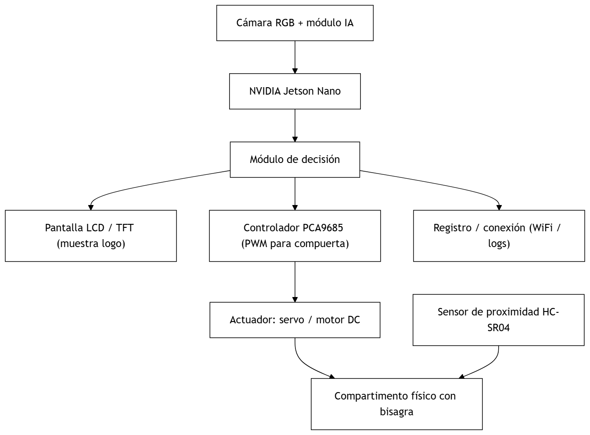
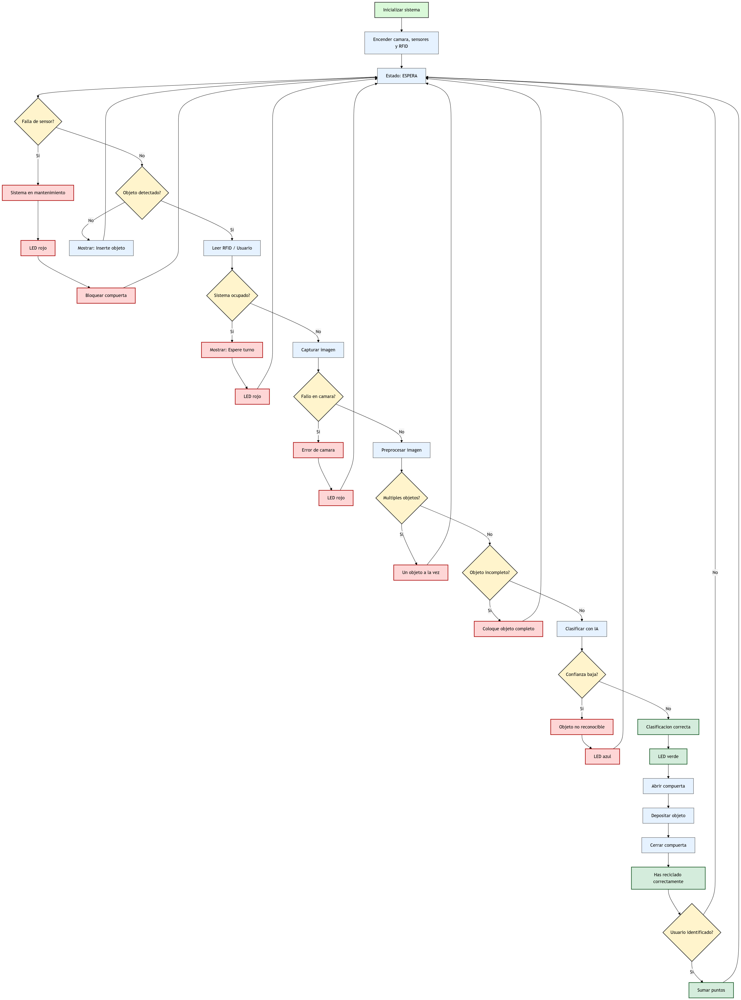
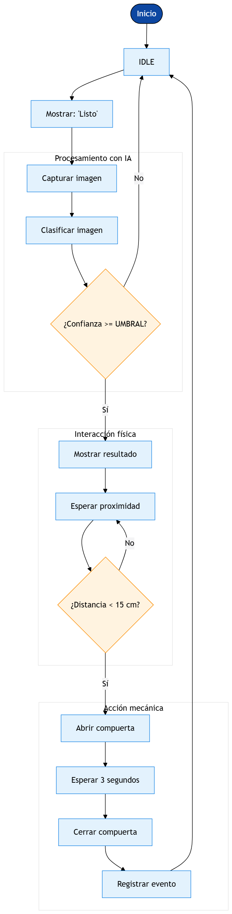

Listo
Cámara en espera y pantalla con estado “Listo”.
Lógica de operación
El flujo combina cámara, IA local, pantalla, sensor de proximidad y actuadores. La compuerta no abre solo por detectar el residuo: espera confirmación de proximidad para hacerlo más seguro y controlado.
Diagrama de bloques

Diagrama visual

Máquina de estados
Cámara en espera y pantalla con estado “Listo”.
La cámara toma un frame cuando detecta movimiento.
MobileNetV2 devuelve clase y confianza: orgánico, reciclable o no reciclable.
La pantalla enseña el logo del compartimento correspondiente.
Si la distancia es menor al umbral, se autoriza abrir.
El PCA9685 activa el servo del compartimento correcto.
Cierra después de 1–3 segundos o cuando se retira la mano.
Guarda tipo, hora, latencia y resultado para análisis.
Secuencia visual
Este flujo reemplaza el pseudocódigo y muestra de forma directa cómo el sistema pasa de espera a captura, clasificación, proximidad, apertura, cierre y registro del evento.
